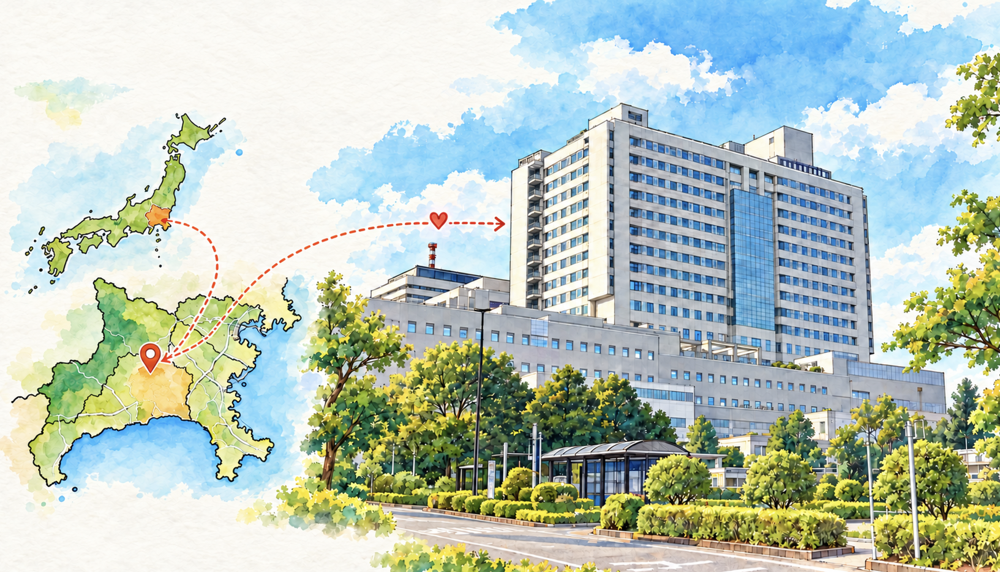
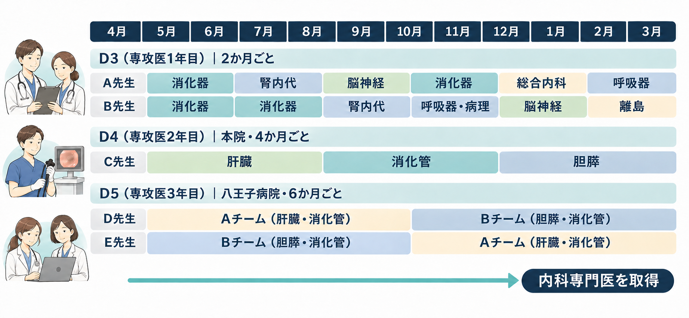
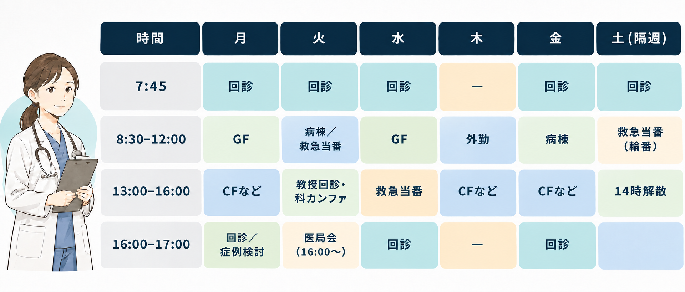
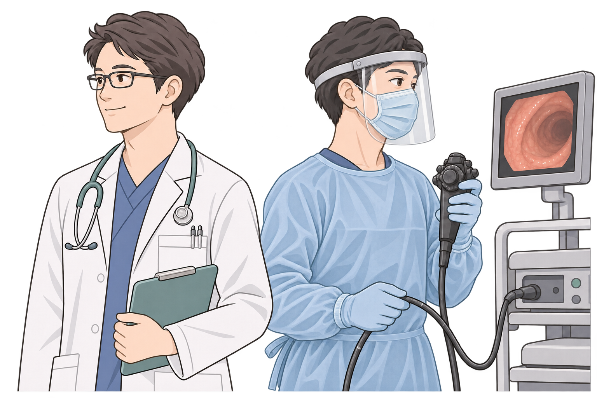

当教室の歴史

東海大学医学部付属病院は1975年に開院しました。当初は、肝胆膵疾患を中心とする第3内科（初代：岩村健一郎教授、二代目：松崎松平教授）と、消化管疾患を中心とする第6内科（初代：三輪剛教授）が診療を担い、2001年の医局再編で消化器内科に統合されました。以来、複数教授制のもとで専門診療を発展させてきました。初代主任教授の峯徹哉教授が築いた礎を、鈴木孝良教授、鈴木秀和教授、加川建弘教授がそれぞれの専門性を活かして継承し、現在は岩崎栄典主任教授のもと、診療・研究体制の充実に取り組んでいます。
2025年4月には岩崎栄典教授が赴任し、2026年4月より領域主任を務めています。胆膵領域の指導医として、日々の臨床と内視鏡技術の指導、臨床研究を中心に、若手医師の育成に力を注いでいます。2026年4月には半田修教授が着任しました。川崎医科大学では炎症性腸疾患（IBD）を専門として地域医療に貢献し、カプセル内視鏡やバルーン内視鏡による小腸診療にも積極的に取り組んできました。また、多くの大学院生の研究指導に携わってきた経験を活かし、当科でも研究・臨床・教育を担っています。それぞれの専門性と指導経験を持つ教授陣のもと、入局した若手の先生方が、日々の診療から専門技術、研究まで幅広く学べる環境を整えています。
臨床研修 — 幅広い診療経験を、次のステップへ
当科では、消化管・肝臓・胆膵の3領域を通じて、臨床を重視した研修を行っています。毎日、朝と夕方のグループ回診で患者さんの状態と診療方針を共有し、見落としの防止と診療の質の向上に努めています。判断や対応に迷ったときも、研修医・専修医が一人で抱え込まず、指導医やチームのメンバーに相談しながら診療を進められる体制です。学年や専門グループを越えて気軽に声をかけ合い、和気あいあいと学べる雰囲気があります。チームで協力しながら、経験や習熟度に応じたきめ細かな指導のもと、多様な症例に主体的に関わることができます。日々の経験や気づきを仲間と共有し、ともに成長していきます。教授・准教授をはじめ、国内の診療ガイドライン作成に携わる指導医や、臨床・内視鏡処置の分野で国際的に活躍する指導医が揃っています。日々の診療を通じて、手技だけでなく、適応の判断、検査・処置前の評価、治療後の管理までを一連の流れとして学びます。国内留学や海外留学についても、本人の希望や将来の目標を伺い、受け入れ先との調整を踏まえて、可能な範囲で相談・調整します。静岡がんセンターなど国内施設での研修・研究や、海外で学ぶ機会についてもご相談ください。
診療実績から見る研修の環境
2025年度の本院（伊勢原）消化器内科の入院患者数は2,065人で、内訳は消化管領域775人、肝臓領域377人、胆膵領域913人でした。年間平均の入院患者数は約50人ほどになります。以下は本院（伊勢原）の2025年度の診療実績です。専攻医ごとに検査・処置の年間経験件数の目標を設定し、積極的にトレーニングに取り組めるよう指導医が配慮します。
消化管領域
| 検査・処置 | 件数 |
|---|---|
| 上部内視鏡 | 11,951 |
| 下部内視鏡 | 3,085 |
| カプセル内視鏡 | 34 |
| 小腸内視鏡 | 18 |
| ESD | 163 |
| ESD：食道 | 33 |
| ESD：胃 | 66 |
| ESD：十二指腸 | 1 |
| ESD：大腸・直腸 | 63 |
肝臓領域
| 検査・処置 | 件数 |
|---|---|
| TACE | 64 |
| RFA | 18 |
| EVL | 24 |
| EIS | 26 |
| BRTO | 6 |
胆膵領域
| 検査・処置 | 件数 |
|---|---|
| ERCP関連処置 | 897 |
| 小腸内視鏡ERCP | 24 |
| EUS関連処置 | 433 |
| 診断EUS | 251 |
| EUS-FNA | 182 |
| EUSドレナージ | 30 |
| ESWL | 25 |
| 内視鏡的乳頭切除 | 3 |
専攻医のローテーション（2026年）
現在の消化器内科の専修医の先生方のローテーションの例を提示します。実際のローテーションは年度や希望により異なります。当科の内科専攻医研修における本院以外での研修先は、基本的に東海大学医学部付属八王子病院です。本人の意向に反して遠方や地方への出向をお願いすることはなく、生活基盤や希望を大切にしながら研修を進められます。
D3（専攻医1年目）：東海大学医学部付属病院（本院）で2か月ごとの内科ローテーションに加え、希望診療科研修・外部研修が可能です。研修の自由度が高く、希望に応じて1か月単位の内科関連研修も可能です。消化器内科医として外来診療・内視鏡のトレーニングを開始します。専修医として地域医療を経験できるよう、奄美大島の中核病院での短期実習を選択できる体制の準備も進めています。D4（専攻医2年目）：東海大学医学部付属病院消化器内科で、各グループをローテートしながら内視鏡技術を全体的に経験し、専門的な研修を行います。D5（専攻医3年目）：東海大学医学部付属八王子病院で、実践的な臨床トレーニングを行います。D6以降：本人と相談のうえ、大学院への進学や、助教として専門分野を定めて臨床業務・臨床研究を継続するなど、それぞれの希望に応じた進路を検討します。

D3消化管チームの一週間
朝の回診は7:45から行い、夕方の回診後に解散となります。火曜日の午後は教授回診、16:00からは医局会を行います。当直は月3〜4回です。消化器内科の当直時には指導医がバックアップにつき、緊急対応や内視鏡治療をサポートするため、安心して診療に取り組めます。休日のローテーションによる出勤はありません。完全当直制としているため、適切に申し送りを行うことで、夜間・休日の呼び出しは基本的にありません。学会や研究会への参加も積極的に推奨しています。チームで業務を調整しながら、一人ひとりが目標に向けた学習やトレーニングを継続し、自らの可能性を広げていけるよう支援します。

専攻医募集について
初期研修1・2年目の先生方を対象に、年に数回の説明会を行っています。個別のご説明やご相談は随時受け付けていますので、お問い合わせフォームからご連絡ください。専攻医の面談は、例年、正式な募集日程の発表後、11月中旬に行われます。応募締切を含む詳細は、その年度の募集案内をご確認ください。当科独自の早期締切は設けておりませんので、ご自身の将来を十分に検討したうえで進路を決めていただければと考えています。
専攻医研修を修了された先生方も、臨床研究を経験したい、アカデミアで新たな挑戦をしたいという方を広く受け入れています。当科には、東海大学、慶應義塾大学、日本大学、東京大学、山口大学、愛媛大学、高知大学など、多様な出身大学の医師が集まっています。出身大学による隔てや学閥、医局による過度な束縛のない環境づくりを心がけ、一人ひとりの希望や挑戦を応援しています。女性医師も多数活躍しており、一人ひとりのライフスタイルや人生設計を第一に考えています。仕事と生活の両立や将来のキャリアについても、ご希望を伺いながら一緒に考えていきます。

給与について
給与・待遇は、専攻医募集要項（ページ下部の臨床助手1種）をご参照ください。職位に応じて研究日が設けられ、外部施設での勤務による収入が見込めます。大学からは学会年会費・参加費・旅費の一部補助もあります。詳しい条件は直接ご相談ください。
大学院について
大学院への進学は、一般的には内科専門研修の修了後を想定していますが、東海大学には専門研修と研究を両立する「ハイブリッド大学院コース」があり、早期に大学院へ入学することも可能です。このコースでは内科専門研修が4年間となるため、研修計画や入学条件を確認しながら進路を検討します。研究テーマや入学時期は、将来の目標やライフイベントを踏まえ、指導教授と相談となります。学費については大学院の学費案内、給与・待遇については募集要項（ページ下部の臨床助手2種）をご参照ください。待遇の詳細は直接ご相談ください。
見学・研修のご相談
見学・研修や入局に関するご相談は、以下のフォームからお寄せください。これまでの経験や学びたい領域、将来の希望を伺いながら、一緒に研修や進路を考えます。